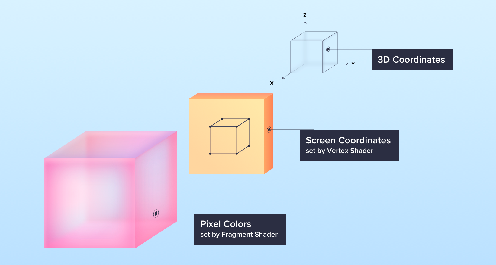
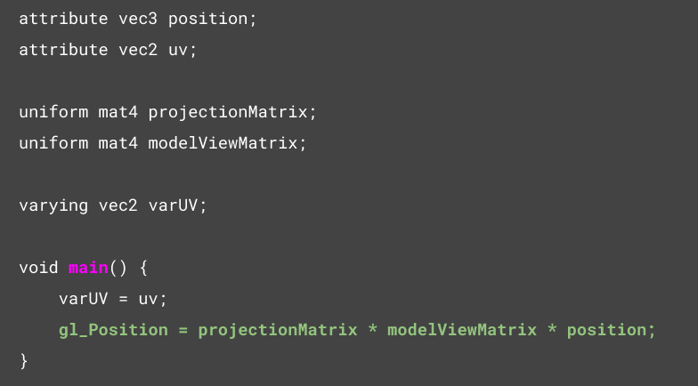
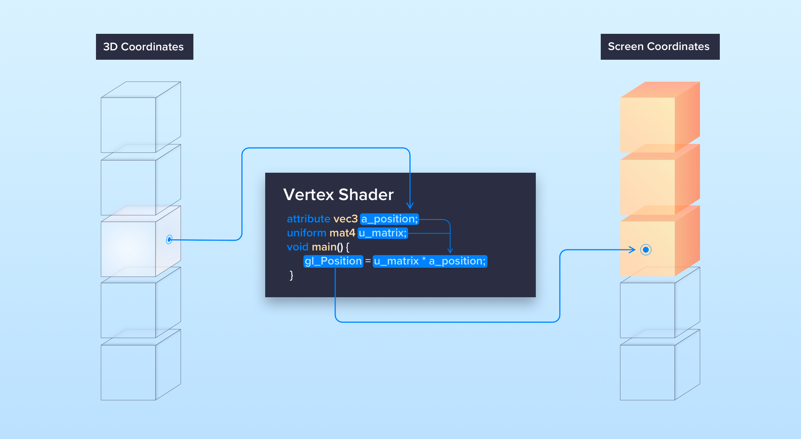
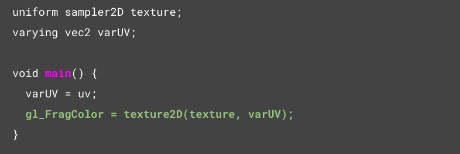
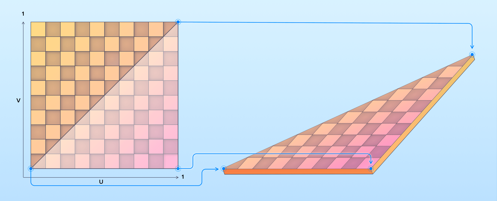
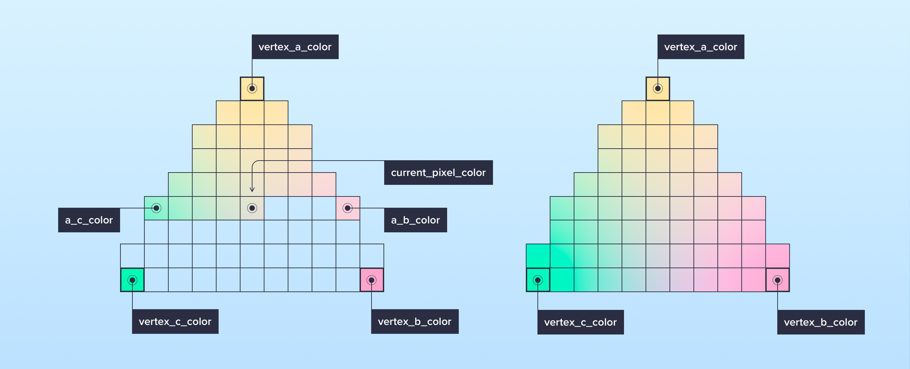
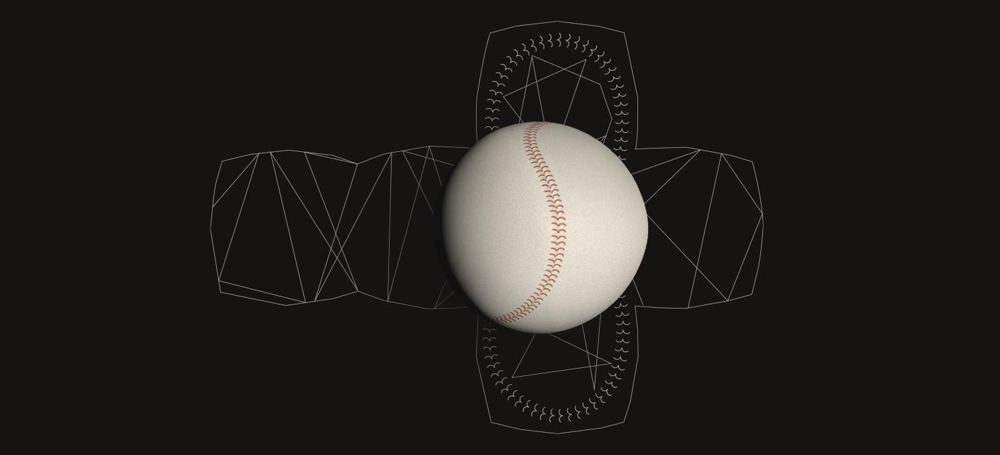

WebGL and computer graphics
In today’s modern world of global digitalization, it’s difficult to imagine our life without web technology. We spend a huge amount of time online: working, communicating, shopping, browsing and watching news. For many companies, their web presence has replaced traditional brick-and-mortar buildings as the main interaction point for customers, potential employees and business partners. Given the increased importance of digital channels, it’s no wonder companies are investing more in their brand’s digital touchpoints, seeking to create unique, memorable online experiences.
To meet this demand, software developers are broadening their portfolios, incorporating advanced digital tools and technology with impressive results. One interesting trend in this area is the improved support for computer graphics. By incorporating three-dimensional graphics on websites, companies can greatly enhance the user experience. Here are just a few examples of how brands can apply this technology:
- Visualizing complex data sets, which can be useful for government agencies and non-profit organizations;
- Creating virtual showrooms and product displays, which is increasingly important in light of the current pandemic. By applying three-dimensional graphics, companies can enable customers to take a tour of everything from cars to properties, all from the privacy (or safety) of their own homes;
- Supplementing online education and training, which again, is quite relevant considering many educational institutions are relying on online instruction these days.
Introducing WebGL
One example of computer graphics technology is WebGL (Web graphics library), a JavaScript API that enables high-performance rendering of 2D and 3D graphics in a browser. For this purpose, no extra plugins are needed; it is enough to have a browser that supports this technology. As browsers are used on a fairly wide range of devices, WebGL will have an increasing impact on the developer community and will become one of the major graphics programming tools in the future.
In this article, I want to share with you the basics of computer graphics and some techniques for optimizing it. The code you will see has been written using the ThreeJS library, which provides a convenient abstraction layer over WebGL.
Base structure
WebGl program consists of a couple of functions called shaders, namely, a vertex shader and a pixel shader (also known as a fragment shader).
The operation principle of shaders can be illustrated using the following scheme:
- Coordinates from "world space" objects are passed to the vertex shader.
- The vertex shader projects these coordinates onto the screen.
- The projected pixels are passed to the fragment shader.
- The fragment shader sets the color of each pixel.
The "world space" objects typically consist of "polygons" (triangles), as shown in the illustration below.
Vertex shader example
Let’s take a closer look at an example of a vertex shader implementation and discuss data transfer methods.
There are four ways to pass data to shaders:
- Attributes are data that is passed separately for each vertex of the polygon. The most obvious example of such data is vertex coordinates, but it could also be many other types of data, such as color, animation parameters, etc.
- Uniform variables are global shader variables. Normally, they contain data common to all vertices of an object, for example - light source parameters or textures.
- Varying variables are used to pass data from a vertex shader to a fragment shader, where this data is interpolated. You can find more details about this process in the Fragment Shader Example section.
- Textures are arrays of data you can randomly access in your shader program. They typically contain an image that is “pulled” onto the geometry of an object. However, textures can also serve as a source of data used to apply lighting, reflections, animation, etc.
Now, let’s go through some details of the vertex shader sample code:
- position contains the coordinates of the polygon vertex.
- uv are the coordinates used to bind the object vertices to the texture pixels.
- projectionMatrix is a projection matrix that is used to convert world space coordinates into clip space coordinates within [-1, 1] boundary. For the sake of simplicity, we can assume that the projection is made on the screen.
- modelViewMatrix is a matrix used to transform coordinates in world space (translation, rotation, scaling, etc.).
- gl_Position is a WebGL built-in variable which contains the position of the current vertex in the clip cpase.
Let’s take a look at the simplified illustration of the vertex shader workflow:
After projection params are applied to the vertex world coordinates, the result is passed to the gl_Position variable.
Fragment shader example
Now let’s take a closer to look at the structure of a fairly simple fragment shader:
The last line of this fragment shader basically does the following:
As we can see from the code, there is a texture uniform and the varying variable var_uv, used for mapping the texture coordinates to the object coordinates.
The value obtained from the texture at the corresponding coordinates will be set to the WebGL built-in variable named gl_FragColor, which is basically a pixel color.
Now let’s take a look at the process of painting the object pixel by pixel. Building a mental model of this process provides a better understanding of responsibility distribution between Vertex and Fragment shaders which helps to improve overall performance.
The operation principle of the pixel shader is shown in the illustration below:
We can see that the data passed from the vertex shader is interpolated during the scan-line filling of the polygon.
The data interpolation process for the current pixel can be described as follows:
- Calculate clip-space coordinates of the vertex.
- Pass a color of each vertex of the polygon to the fragment shader.
- Calculate the color of the pixels at the start and end of the scan-line. This is done by interpolating a corresponding value between vertices a-b and a-c.
-
Calculate the color of the current pixel using the same approach – by interpolating a color value
between the start and end of the scan-line using the formula:
(endColor - startColor) * (pixelIndex / lineLength)
where startColor, endColor are colors of the start / end of the line, respectively; pixelIndex is the index of the current pixel in the line and lineLength is the length of the line.
The same approach is used to calculate the coordinates of the texture pixel, as well as other data passed from the vertex shader to the fragment shader, such as lighting, for example.
And finally, let’s take a look at the render result of applying texture and lighting to a model as described above:
Now, having all that in mind, we can say that to improve rendering performance we need to make as many calculations as possible in the Vertex shader and pass the results to the Fragment shader where this data can be interpolated quickly, without having to apply the same calculations for each pixel.
Conclusion
WebGL is a flexible and powerful tool for creating computer graphics in a browser and can be applied in various areas:
- Visualizing data, e.g. cartographic, statistical or data obtained from scanners used in medicine, robotics, etc.
- Implementing complex design solutions
- Game development
- Online graphic editors
- Image processing
- Interactive presentations
- Implementing virtual/augmented reality projects
I hope you enjoyed reading this article and it will help you to bring our ideas to life.